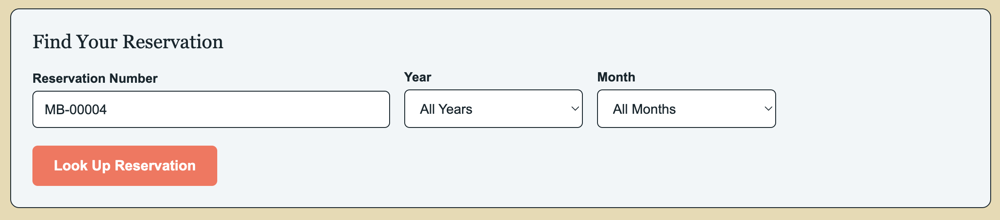
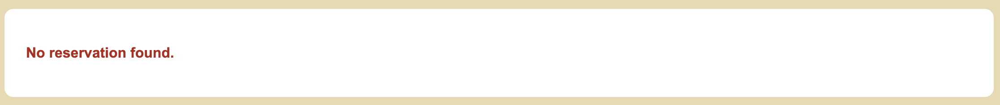

Test 2: Customer Cannot Retrieve Another Customer's Reservation
Test Objective: Verify that the Look Up Reservation backend only returns reservations that belong to the signed-in customer.
Developer: Carolina Rodriguez | Tested On: Sept 18, 2026
Peer Tester: Robert Breutzmann | Tested On: Sept 18, 2026
| Step | Action | Expected Results | Dev Test | Peer Test |
|---|---|---|---|---|
| 1 | Sign in using elena.marsh@example.com and password MoffatMarsh01!. |
Login succeeds and Elena's customer session is active. | Pass | Pass |
The header after Step 1's login, reading "Welcome, Elena M."  | ||||
| Step | Action | Expected Results | Dev Test | Peer Test |
| 2 | Open Look Up Reservation and search for reservation number MB-00004. Leave Year as All Years and Month as All Months. |
The backend searches using Elena's session customer ID along with the reservation number. | Pass | Pass |
The lookup form filled in with MB-00004, All Years, and All Months before submitting in Step 2.  | ||||
| Step | Action | Expected Results | Dev Test | Peer Test |
| 3 | Review the result. | The reservation is not displayed and the page shows No reservation found. |
Pass | Pass |
The "No reservation found." message from Step 3, with no reservation card shown.  | ||||
Comments
Developer (Carolina)
The lookup correctly did not return a reservation that did not belong to the signed-in customer. Instead, the page showed “No reservation found.” The backend is using the customer ID from the session to limit reservation results. I did have to adjust the error message because at first the page was not displaying any response when no reservation was found. After that fix, no additional backend issues came up.
The lookup correctly did not return a reservation that did not belong to the signed-in customer. Instead, the page showed “No reservation found.” The backend is using the customer ID from the session to limit reservation results. I did have to adjust the error message because at first the page was not displaying any response when no reservation was found. After that fix, no additional backend issues came up.
Peer Tester (Robert)
See my note above on filtering. Dropdowns for reservation numbers could be filled in live by the database so there is no chance at all that a customer could fill in someone elses reservation number.
See my note above on filtering. Dropdowns for reservation numbers could be filled in live by the database so there is no chance at all that a customer could fill in someone elses reservation number.